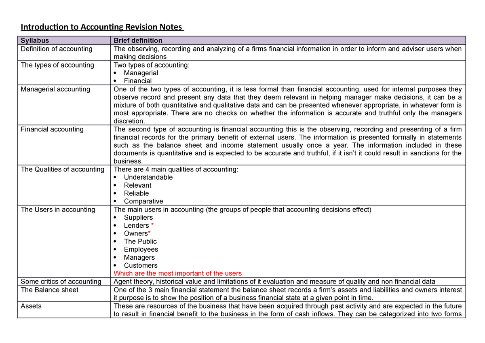

Naše usluge

Revizija
U skladu sa zahtjevima pojedinih računovodstvenih standarda prilikom priznavanja, mjerenja i objavljivanja pozicija financijskih izvještaja menadžment se često služi procjenama.